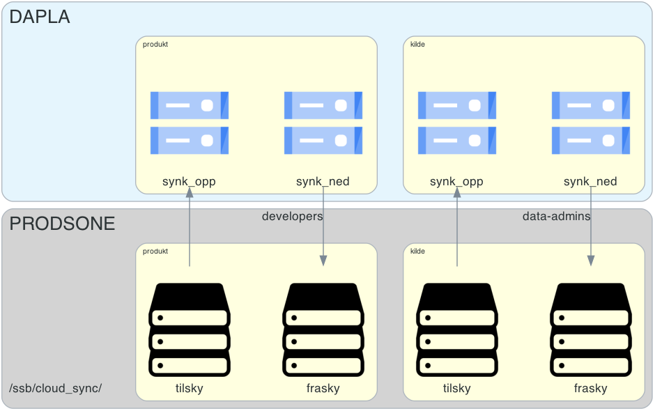

Transfer Service
Storage Transfer Service1 er en Google-tjeneste for å flytte data mellom lagringsområder. I SSB bruker vi hovedsakelig tjenesten til å:
Flytte data mellom et Dapla-team sine bøtter på Dapla og deres lagringsområde i prodsonen.
Flytte data mellom bøtter på Dapla2.
Tjenesten støtter både automatiserte og ad-hoc overføringer, og den inkluderer et brukergrensesnitt for å sette opp og administrere overføringene i Google Cloud Console (GCC).
Tilgangsstyring
Tilgangsstyringen til data gjelder også for overføringer av data med Transfer Service. Det betyr at du må ha tilgang til dataene du skal sette opp overføringsjobber for. Ved bruk av Transfer Service for overføring av data mellom bakke og sky så er det satt opp en dedikerte mapper for dette i prodsonen. Også her følges tilgangsstyringen til dataene, med unntak av at data-admins har permanent tilgang til kildedata som er synkronisert ned til bakken, mens man på Dapla må de gi seg selv korte, begrunnede tilganger ved behov.
På Dapla så er det opprettet dedikerte bøtter for overføring av data mellom bakke og sky. Disse heter synk_opp og synk_ned. Tanken med disse “mellomstasjonene” for overføring av data er at de skal beskytte Dapla-team fra å overskrive data ved en feil. Ved å ha egne bøtter som data blir synkronisert gjennom, så legges det opp til at man deretter manuelt3 flytter dataene til riktig bøtte.
Men det er ikke lagt noen sperrer for synkronisere direkte til en annen bøtte man har tilgang til. Systembrukeren (se forklaringsboks) som kjører Transfer Service har tilgang til alle bøttene i prosjektet. Det betyr at en data-admin kan velge å synkronisere data direkte inn i kildebøtta hvis man mener at det er hensiktsmessig. Det samme gjelder for developers som setter opp dataoverføringer i standardprosjektet. Men da er det som sagt viktig å være bevisst på hvordan man setter opp reglene for overskriving av data hvis filene har like navn. Disse opsjonene forklares nærmere senere i kapitlet.
Når du setter opp en overføringsjobb med Transfer Service så setter du opp en jobb som kjøres av en systembruker4 og ikke din egen personlige bruker. Dette er spesielt viktig å være klar over når man setter opp automatiserte overføringsjobber. En konsekves av dette er at automatiske overføringsjobber vil fortsette å kjøre selv om din tilgang til dataene er midlertidig, siden det er en systembruker som faktisk kjører jobben.
Forberedelser
Første gang du bruker Transfer Service må du sjekke at tjenesten er aktivert for teamet. Transfer Service er en såkalt feature som teamet kan skru av og på selv. For å sjekke om den er skrudd på går du inn i teamets IaC-repo5 og sjekker filen ./infra/projects.yaml.
dapla-example-iac/infra/projects.yaml
team_uniform_name: dapla-example
projects:
- project_name: dapla-example
env: prod
features:
- dapla-buckets
- transfer-serviceI filen over ser du at teamet har skrudd på tjenesten i prod-miljøet, siden den transfer-service er listet under features. Hvis tjenesten ikke er skrudd på kan du lese om hvordan du skrur den på i feature-dokumentasjonen.
Overføring av data
Overføring av kildedata må gjøres av en data-admin i teamet som har aktivert sin forhåndsgodkjente tilgang til kildedata. Tilgangen aktiveres ved å gå inn i JIT-applikasjonen og velge prosjekt-id. Deretter velger du rollene ssb.bucket.write, ssb.buckets.list og storagetransfer.admin, og hvor lenge du ønsker tilgangen. Til slutt oppgir du en begrunnelse for hvorfor du trenger tilgangentilgangen og trykker Request access. Når du har gjort dette vil du få en bekreftelse på at tilgangen er aktivert, og det tar ca 1 minutt før den aktiverte tilgangen er synlig i GCC.
Grensesnittet for å sette opp overføringsjobber i Transfer Service er tilgjengelig i Google Cloud Console (GCC).
Gå inn på Google Cloud Console i en nettleser.
Sjekk, øverst i høyre hjørne, at du er logget inn med din SSB-konto (xxx@ssb.no).
Velg prosjektet6 som overføringen skal settes opp under.
Etter at du har valgt prosjekt kan du søke etter Storage Transfer i søkefeltet øverst på siden, og gå inn på siden.
Når det opprettes et Dapla-team, så opprettes det flere Google-prosjekter for teamet. Når du skal velge hvilket prosjekt du skal jobbe på i GCC, så følger de en fast navnestruktur. For eksempel så vil et team med navnet dapla-example få et standardprosjekt som heter dapla-example-p. Det blir også opprettet et kildeprosjekt som heter dapla-example-kilde-p.
Første gang du bruker Storage Transfer må man gjøre en engangsjobb for å bruke tjenesten. Dette gjøres kun første gang din bruker setter opp en jobb, og deretter trenger du ikke å gjøre det flere ganger.
Når du kommer inn på siden til Storage Transfer så trykker du på Set Up Connection. Når du trykker på denne vil det dukke opp et nytt felt hvor du får valget Create Pub-Sub Resources. Trykk på den blå Create-knappen, og deretter trykk på Close lenger nede. Da er engangsjobben gjort, og du kan begynne å sette opp overføringsjobber.
- I navigasjonsmenyen til venstre trykk
Transfer jobs, og deretter trykk på+ Create transfer jobøverst på siden for å opprette en ny overføringsjobb. Da får du opp bildet som vist i Figur 1.

Videre vil det variere om man skal overføre data mellom bøtter eller mellom Dapla og prodsonen. Under forklarer vi begge fremgangsmåtene.
Prodsonen og Dapla
Overføring mellom bakke og sky er en overføring av data mellom en bøtte på Dapla og en mappe i prodsonen. Siden tilgangsstyring til kildedata er strengere enn tilgangsstyring til annen data, så er det det to litt fremgangsmåter for å sette opp overføringsjobber for disse.
Siden stegene er litt forskjellig avhengig av om man skal flytte kildedata eller annen data, så deler vi denne delen i to. Figur 2 viser hvordan dette er satt opp. Kildeprosjektet på Dapla har en synk-opp-bøtte for å flytting av data fra prodsonen til Dapla, og den har en synk-ned-bøtte for å flytte data fra Dapla til prodsonen. Standardprosjektet på Dapla har også en synk-opp-bøtte for å flytte data fra prodsonen til Dapla, og den har en synk-ned-bøtte for å flytte data fra Dapla til prodsonen.

Videre viser vi hvordan man overfører fra Dapla til prodsonen. Overføring motsatt vei innebærer bare at man bytter om på Source type og Destination type.
- I fanen Get started velger du:
- Source type: Google Cloud Storage
- Destination type: POSIX filesystem
- I fanen Choose a source trykker du på Browse, velger hvilken bøtte eller “undermappe” i en bøtte du skal overføre fra, og trykker Select7.
- I fanen Choose a destination velger du transfer_service_default under Agent pool. Under Destination directory path velger du hvilken undermappe av som filen skal overføres til. Tjenesten vet allerede om du er i kilde- eller standardprosjektet, så du trenger kun å skrive inn
frasky/ellertilsky/her, og evt. undermappenavn hvis det er aktuelt (f.eks.frasky/data/8). Trykk Next step. - I fanen Choose when to run job velger du hvor ofte og hvordan jobber skal kjøre. Tabell 1 viser hvilke valg du kan ta. Trykk Next step.
| Valg | Frekvens |
|---|---|
| Run once | Engangoverføringer |
| Run every day | Synkroniser hver dag |
| Run every week | Synkroniser hver uke |
| Run with custom frequency | Synkroniser inntill hver time |
| Run on demand | Synkroniserer når du manuelt trigger jobben |
- I fanen Choose settings kan du velge hvordan detaljer knyttet til overføringen skal håndteres. Tabell 2 viser hvilke valg du kan ta.
| Valg | Undervalg | Handling |
|---|---|---|
| Identify your job | Beskriv jobben kort. | |
| Manifest file | Ikke relevant. Bruk default valg. | |
| Choose how to handle your data | Metatdata options | Ikke relevant. Bruk default valg. |
| When to overwrite | Tenk nøye gjennom hva du velger her. | |
| When to delete | Tenk nøye gjennom hva du velger her. | |
| Choose how to keep track of transfer progress | Logging options | Skru på logging. |
Valgene When to overwrite og When to delete er det viktig at tenkes nøye gjennom, spesielt ved automatiske synkroniseringer. When to overwrite er spesielt siden det kan føre til data blir overskrevet eller tapt.
- Trykk på den blå Create-knappen for å opprette overføringsjobben. Du vil kunne se kjørende jobber under menyen
Transfer jobs.
Mappestrukturen i prodsonen
Mappestrukturen for overføringer med Transfer Service mellom bakke og sky har en fast struktur som er likt for alle team. Hvis du logger deg inn i terminalen på en av Linux-serverne i prodsonen, åpner du mappen ved å skrive cd /ssb/cloud_sync. Under denne mappen finner du en mappe for hvert team som har aktivert Transfer Service. Hvis et team for eksempel heter dapla-example så vil det være en mappe som heter dapla-example-p. Her kan teamet hente og levere data som skal synkroniseres mellom bakke og sky. Videre er det undermapper for kilde- og standardprosjektet til teamet. Det er kun data-admins som har tilgang til kildeprosjektet, og det er kun developers som har tilgang til standardprosjektet. Under finner du en oversikt over hvordan mappene ser ut for et team som heter dapla-example.
/ssb/cloud_sync/dapla-example-p/
dapla-example-p
│
├── kilde
│ │
│ │── tilsky
│ │
│ └── frasky
│
└── standard
│
│── tilsky
│
└── fraskyBøtte til bøtte
Overføring mellom bøtter er en overføring av data mellom to bøtter på Dapla. Fremgangsmåten er helt likt som beskrevet tidligere, men at du nå velger Google Cloud Storage som både kilde og destinasjon. Igjen er vi avhengig av at systembrukeren som utfører jobben har tilgang til begge bøttene som er involvert i overføringen. Default er at et team kan overføre mellom bøtter i kildeprosjektet, og at de kan overføre mellom bøtter i standardprosjektet, men aldri mellom de to. Hvis du ønsker å overføre mellom bøtter i ditt prosjekt og et annet teams prosjekt, så må du be det andre teamet om å gi din systembruker tilgang til dette.
Fotnoter
I SSB kaller vi tjenesten for Transfer Service, men du kan oppleve at Google kaller den litt forskjellige ting. Den blir omtalt som Storage Transfer Service noen steder, mens i Google Cloud Console blir den omtalt som Data Transfer eller Storage Transfer↩︎
Flytting av data mellom bøtter krever at prosjektets Transfer Service har tilgang til begge bøttene.↩︎
Med manuelt menes her at man går inn og flytter filer fra en bøtte til en annen. Men det kan også bety at man flytter data til riktig bøtte som en del produksjonskoden sin, som igjen kan kjøres automatisk.↩︎
Systembrukere heter Service Accounts på engelsk og blir ofte referert til som SA-er i dagligtale.↩︎
Du finner teamets IaC-repo ved å gå inn på https://github.com/orgs/statisticsnorway/repositories og søke etter ditt teamnavn og åpne den som har navnestrukturen teamnavn
-iac. For eksempel vil et team som heter dapla-example har et IaC-repo som heterdapla-example-iac.↩︎Du kan velge prosjekt øverst på siden, til høyre for teksten Google Cloud. I bildet under ser du at hvordan det ser ut når prosjektet
dapla-felles-per valgt. ↩︎
↩︎Når du skal velge en undermappe i en bøtte så er grensesnittet litt lite intuitivt. Du kan ikke trykke på navnet, men du på trykke på -tegnet for å se undermappene.↩︎
Når du skal synkronisere fra Dapla til en undermappe i prodsonen, så må mappen i prodsonen allerede eksisterere. Hvis den ikke gjør det vil jobben feile. Ved synkronsiering fra prodsonen til Dapla trenger ikke undermappen eksistere, siden bøtter egentlig ikke har undermapper og filstien fra prodsonen bare blir til filnavnet i bøtta.↩︎